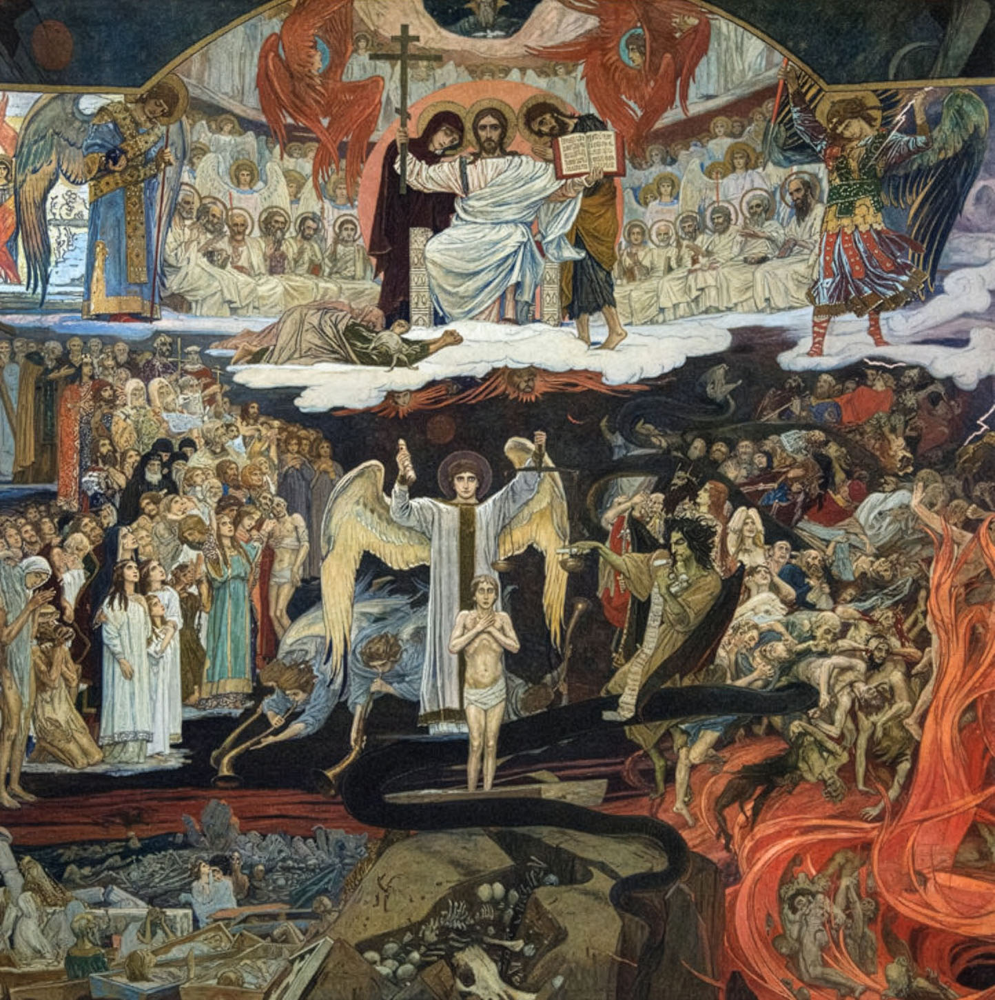

Dies Irae
A mystical piano suite mixing atonality and Byzantine inflection

Scores & Recordings
Recording
Summary
Dies Irae is an early, large-scale piano suite in three movements, fantasia, fugue and passacaglia, built around a dense religious and mystical expressive world. Drawing on free atonality, modal procedures, tonal residues and Byzantine as well as Gregorian melodic inflections, the piece already outlines several of the stylistic traits that would later define my compositional language.
Imprint
| Orchestration | Piano / Pian |
|---|---|
| Lyrics | — |
| Duration | 00:16:34′ |
| State | Finished |
| Completed | 2001 |
| Premiered | — |
| Performed by | — |
| Honors | — |
| Copyright | Claudius Iacob |
Program notes
Dies Irae ("Day of Wrath," an expression that in Abrahamic imagery signifies the Last Judgment) is a student work, written at the age of nineteen or twenty, during my first semester at the Conservatory, and at the same time the first piece of art music in my catalogue that I still consider, strictly musically speaking, significant.
The score is generally dense. At times the music is hardly representable in notation, let alone performable, to the point that no interpreter will most likely ever be able to realize every sign in this musical text. The influences are clearly recognizable: Bach, Liszt, Grieg, Reger, Ligeti, Messiaen, George Enescu, Sigismund Toduță, Aurel Stroe, and Romanian Byzantine music, since when I was composing this work I had only recently left the benches of the Orthodox Theological Seminary in Bucharest. Within the piece’s few hundred measures one finds crowded together almost every kind of unconventional writing I had managed to learn about in my first five months at the Conservatory, with the fervor, naivety and insecurity of the apprentice who is convinced he must quote from every book he has read in order to persuade others, and himself, of his erudition and worth. Needless to say, this is an approach I abandoned over time, as I found my own voice and musical expression.
The work is organized as a suite and comprises three sections, each with its own formal design and expressive character, yet all of them relying on the same way of organizing pitch, an amalgam of modalism, tonalism and free atonality, and on the same melodic ground, predominantly Byzantine, here and there seasoned with Gregorian appearances.
The first part has a free form, far too free for the label fantasia to redeem adequately, which later compelled me to adopt much stricter forms in the following sections, fugue and passacaglia. Its character is impetuous, chaotic and rhapsodic. There is no genuine thematic working-out or developmental procedure. The sigh motive, the descending minor second on a trochaic metric foot, is the subtext on which the entire material is built, in competition with the scale of the Byzantine echoi II and VI, known as chromatic modes because of the augmented second. These elements, together with the false harmonic relation of the ascending minor third, for instance C - E-flat - G progressing to E-flat - G-flat - B-flat instead of E-flat - G-natural - B-flat, give the music its dark, plaintive and mystical character and, together with the aggressive clusters, inspired its title: Memini tremendae diei ilius ("I remember that fearful day," or, in a poetic but imprecise Romanian liturgical translation, "I think upon the fearful day").
The second part is a fugue, with certain liberties, in four voices on an original subject, an imagined Gregorian chorale incipit to the text "Libera me, Domine, de morte eterna" ("Deliver me, O Lord, from eternal death"), a text included in the Roman Catholic rite for the dead, within the final group of prayers spoken or sung before burial, hence the section’s title. This section forces what might be called a modal fugue, adapting a musical form par excellence tonal, the fugue, to a mode of pitch organization foreign to it, namely the modal one. Here the harmony is in principle the vertical result of the melodic material unfolded by the four voices, though there was also a certain degree of harmonic control, while that melodic material itself stems from an exhaustive exploitation of the initial subject and of Gregorian modal ethos. In spite of modulations and transpositions, chromaticism is not decisive here, so what one hears in the end, from a harmonic point of view, is a kind of pan-diatonic harmony, a succession of clusters on the white keys of the piano, of varying thickness and density. Alongside the unusual thematic material, the rhythm is also of interest, above all because stretto, the partial overlapping of a fugue subject with its answer, is the principal imitative procedure employed. In trying to imitate, or at least suggest, as faithfully as possible the natural prosody of the implicit text, I resorted to dissolving the metric frame through the complete rhythmic individualization of each voice. The piece is notated in 4/8 so that it may be performed, yet each voice freely alternates groups of two, three, four and five eighth notes, resulting, at least in theory, in an infrastructure of polyrhythms, a melody of rhythms. In practice, the far too frequent appearance of note-against-note situations threatens the whole polyphonic scaffold, and the section tends to sound mechanical and clattering, something the performer must counter with considerable inventiveness.
The third part is a passacaglia entitled Ad Te Domine, clamavi, a title approximating the opening of Psalm 129/130, "De profundis clamavi ad Te, Domine," a psalm present in the worship of all Christian confessions. My theme, an original one, is a rudiment of Byzantine monody, or rather a schematic Byzantine monody, that can be circumscribed to echoi I or V in various transpositions. The harmonic treatment follows both a pan-diatonic strand, corresponding to those two modes, and a chromatic one, approximating echoi II and VI. The theme’s variations are very free, in some of them barely suggested by their constituent melodic pillars. The end of the section abandons the passacaglia form without warning and takes up again the atmosphere, the writing and some elements of material from Part I, closing the work with a quotation from a Byzantine kalophonic chant, "Doamne, femeia ceea ce căzuse," the corresponding text fragment being "Vai, vai mie" ("Woe, woe is me").
Dies Irae was therefore a piece on which I labored intensely. Yet despite the considerable effort this project required, when I look at the resulting music with my present eyes I notice many shortcomings and many aspects that leave me dissatisfied, my pianistic writing, still clearly in formation at the time, for instance, or my limited ability to exploit sonic material, something I compensated for, to a degree, through an abundance of melodic and harmonic inventiveness characteristic of youth and beginners. At the same time, however, it seems to me that Dies Irae synthesizes very well the principal stylistic traits from which I later developed my compositional language: the synthesis between free atonality and modalism, itself a synthesis between Messiaen and the old church modes, Byzantine and Gregorian, the mystical vein, the fascination for dense harmony and austere, naked chorales, the sigh motive, and so on. Probably thanks to this as well, despite the many revisions it underwent, in 2011, 2014, 2018 and 2020, the piece has preserved its original character almost intact.